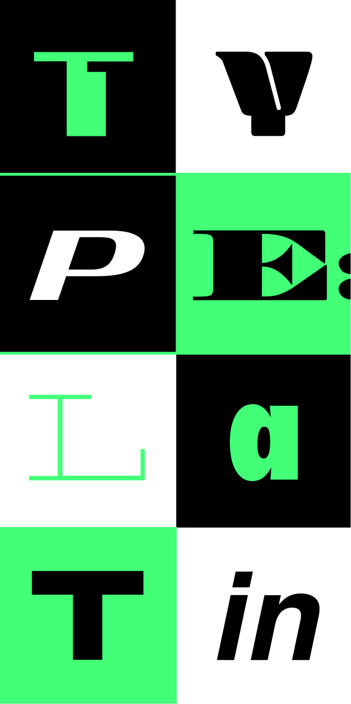
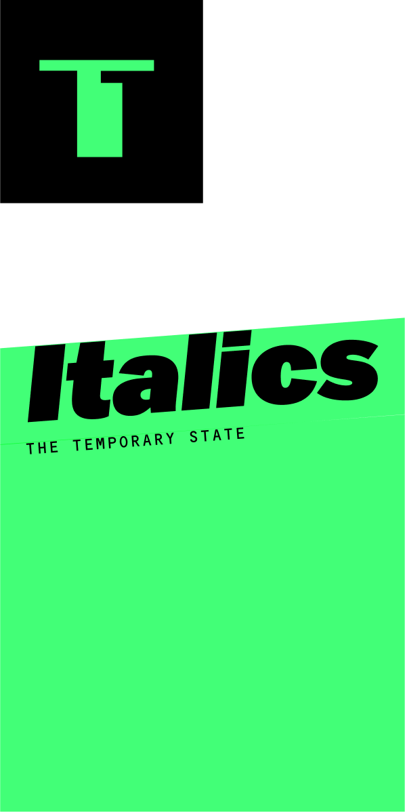
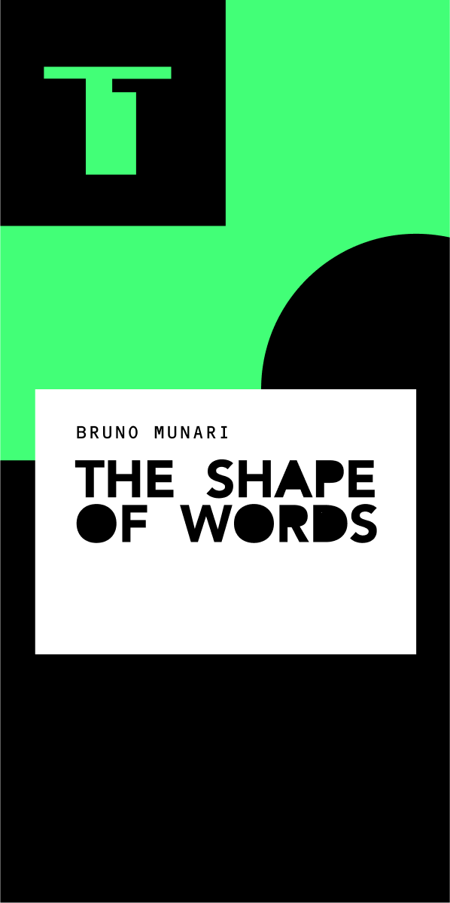
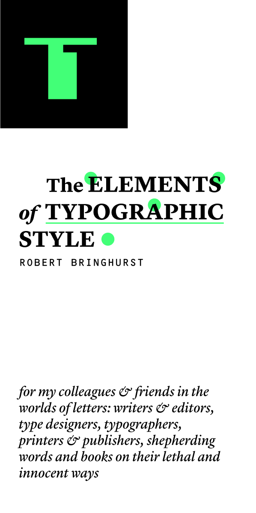
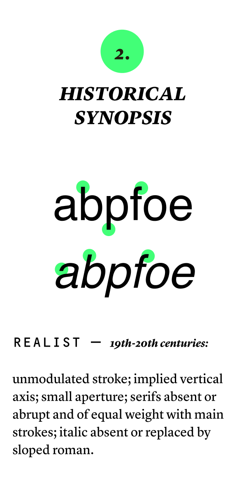

code

sos for ios
This prototype was built using HTML, CSS & JavaScript and is a feature proposal for Apple’s IOS. I created First Aid guides to be accessed from the iPhone’s emergency screen to empower people to intervene during time-sensitive emergencies in the event that they are not prepared to do so. While this prototype is designed for the iPhone, the website is still responsive across devices, making it a self-sufficient artifact. Here's a link to the live site.

type: latin
I designed this website using only HTML & CSS. It is a curated collection of readings that constitutes a study and celebration of the latin script and its typographic applications throughout history. Each reading has its own identity within the larger visual scope of the website. Here's a link to the live site.
-
type: latin, desktop landing page
-
scrolling through italics reading
-
scrolling through the shape of words reading
-

mobile screens
- 
- 
- 
- 

nirvaan
Project description Here's a link to the live site.

video games
One of my most enduring passions in life is for video games! It was such a fun opportunity to take a Creative Coding class at The New School to bring some ideas to life, and for an avid player like me to experience what happens behind the curtain. These projects were built using Unity and C#. Some are solo projects but most were created with my talented group mates Sabrina Tseng and JC Clark. It's dangerous to go alone! 🧚 Here’s where you can play and learn more about these games: Marble’s Inferno • Where’s My Cat? • Whiskerwood • Don’t Look Back